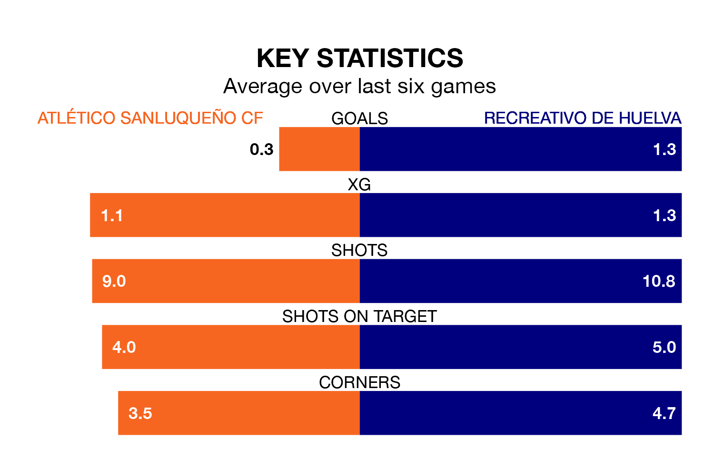

Atlético Sanluqueño CF are on a terrible run ahead of hosting Recreativo de Huelva at the Estadio El Palmar on Sunday, with just two points collected from their last six games.
Atlético Sanluqueño have picked up two draws and four losses in their last six Primera Division RFEF Group 2 games, and face a Recreativo de Huelva side whose last six games have brought two wins and three draws.
With Rubén Ramos González between the sticks, Recreativo de Huelva can rely on one of the league's safest pair of hands. He has kept 11 clean sheets in his 22 appearances this season, and no 'keeper has prevented the opposition scoring more often in Primera Division RFEF Group 2.
In Atlético Sanluqueño's net, Samuel Pérez Fariña has seven clean sheets in 19 games.
In the last 10 years, Atlético Sanluqueño and Recreativo de Huelva have played each other on 11 occasions. Atlético Sanluqueño won one of them, Recreativo de Huelva five, and they drew five times.
On average, Atlético Sanluqueño scored 0.7 goals and Recreativo de Huelva 1.3 in those matches.
Their last meeting was on November 19, when Recreativo de Huelva won 1-0 at home.
With 31 goals in 32 games so far this season, the home team are scoring at below the league average rate with 1.0 goals per game. And they are conceding more than average, letting in 37 goals at a rate of 1.2 per game.
The visitors, meanwhile, are average scorers, with 1.1 goals per game. They have conceded 0.9 goals per game.
Atlético Sanluqueño are 15th in the table after 32 games, of which they have won eight and drawn 11, earning 35 points.
Recreativo de Huelva are nine places ahead of Atlético Sanluqueño in sixth, with 14 wins and 10 draws putting them on 52 points.
Atlético Sanluqueño's last match was on April 14, a 2-1 loss against Antequera CF, with Francisco Mwepu getting the goal for Atlético Sanluqueño.
Recreativo de Huelva beat Real Madrid B 1-0 last time out, also on April 14, with José Antonio de la Rosa on the scoresheet.
Updated: 11:31 (UTC), 15/04/24